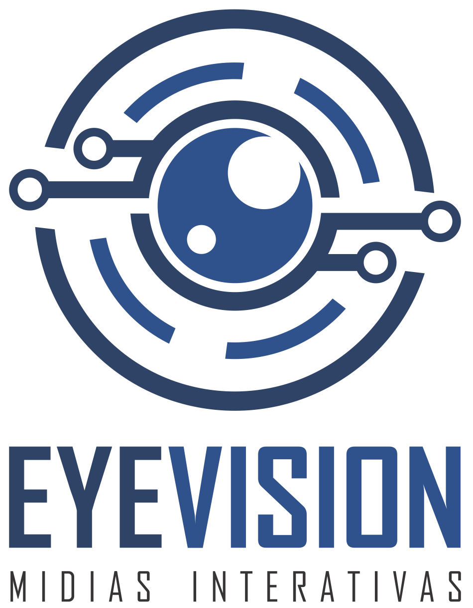

Sobre nós

Promotora Holográfica

Totem Interativo
Totens interativos que atendem inúmeras necessidades de interação independente do segmento de atuação. Seus produto, marca ou serviços podem ser apresentados através de aplicativos promocionais, Quiz interativos, jogos, Chatbot e tudo através de Totens Interativos e Inteligentes. Desenvolvemos aplicativos e soluções interativas por demanda, tornado assim suas campanhas ou eventos únicos e inovadores.Conte conosco para levar a inovação para sua empresa e evento.

Projeção Holográfica
Apresentamos seu produto de forma totalmente interativa e inovadora, através de projeção holográfica desenvolvida por demanda conforme a necessidade do cliente. As projeções são realizadas através de displays holográficos de diversos tamanhos.
Industria 4.0
Indústria 4.0 ou Quarta Revolução Industrial é uma expressão que engloba algumas tecnologias para automação e troca de dados e utiliza conceitos de Sistemas ciber-físicos, Internet das Coisas e Computação em Nuvem. A Indústria 4.0 facilita a visão e execução de "Fábricas Inteligentes" com as suas estruturas modulares, os sistemas ciber-físicos monitoram os processos físicos, criam uma cópia virtual do mundo físico e tomam decisões descentralizadas. Com a internet das coisas, os sistemas ciber-físicos comunicam e cooperam entre si e com os humanos em tempo real, e através da computação em nuvem, ambos os serviços internos e intra-organizacionais são oferecidos e utilizados pelos participantes da cadeia de valor. Estas novas tecnologias trazem inúmeras oportunidades para a agregação de valor aos clientes e aumento de produtividade de processos, mas sem o enfoque adequado podem desperdiçar grandes investimentos, com poucos resultados.

Análise Facial
O processo de análise fácil consiste primeiramente em identificar a face de uma pessoa em um determinado vídeo ou imagem. A partir da detecção da face, podemos realizar a identificação de um indivíduo por meio do reconhecimento facial, estimativa de idade, reconhecimento de expressões faciais e de gênero. Com a análise facial, podemos mensurar o nível de satisfação do seu cliente durante a compra de um determinado produto, marca ou serviço. Além disso, sua divulgação pode ser totalmente dinâmica, inteligente com base na faixa etária e gênero dos seus clientes, ou seja, os produtos podem ser exibidos conforme a característica da pessoa que está transitando na frente do Totem ou Painel de divulgação.
Detecção automática de EPI
Com a utilização de Inteligência artificial, pode-se aumentar a segurança nas indústrias, por meio da detecção automática de EPI. A solução permite analisar imagens de tarefas de campo com foco em segurança, detectando desvios e incidentes, como o uso incorreto de Equipamento de Proteção Individual ou até a ausência deles.

Identificação de sonolência e Fadiga
A sonolência pode causar diversos problemas, tais como: acidentes de trânsito e de trabalho, pois o colaborador ou condutor apresentando sonolência, acaba perdendo seus reflexos de atenção.Nós da EYEVISION Mídias Interativas, desenvolvemos uma solução que por meio da Inteligência Artificial, consegue identificar se o condutor ou colaborador está apresentando sinais de sonolência, levando o mesmo a dormir durante suas atividades, causando assim algum tipo de acidente.A solução captura imagens e identifica se o indivíduo está dormindo, caso esteja, é enviado um sinal com objetivo de alertar o responsável da setor. A análise pode ser aplicada tanto para faces que possuem acessórios, como óculos de grau ou para faces que não possuem qualquer tipo de acessório.
Demonstração
A EYEVISION Mídias Interativas é especialista em análise de imagens. Utilizamos milhares de imagens para treinar nossos algoritmos de análise, permitindo assim uma alta taxa de acuracidade nas nossas soluções.